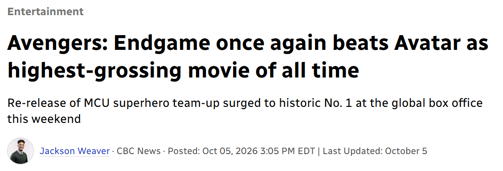
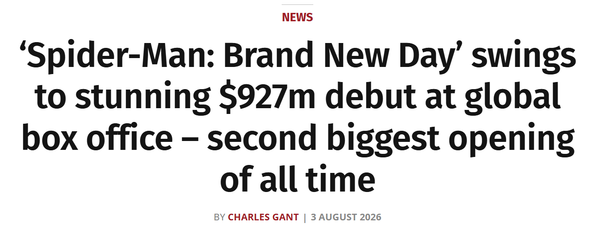

“The Numbers” Don’t Lie,
But They May Misdirect
How box office numbers can create misinformed impressions of success
By Connor Bayers and Vincent Li
How do we measure the success of a movie?
Box Office Number?


Cumulative Worldwide Box Office Numbers (as of 2024)
Top ten movies by raw worldwide box office.
Loading chart…
Cumulative Worldwide Box Office Numbers (as of 2024), Adjusted for Inflation
Inflation-adjusted worldwide box office for the top ten movies.
Loading chart…
Worldwide Box Office Numbers as a Ratio over Production Budget
Worldwide box office divided by production budget for the top ten movies.
Loading chart…
Top movies by genre
Select one or more genres to see their top ten movies; colors identify each genre.
Loading genres…
Top ten movies by worldwide box office
Loading chart…
How does the ranking change with the measure?
Select a metric and one or more genres. Shared bars move to their new ranking.
Loading genres…
Top ten by worldwide box office
Loading chart…